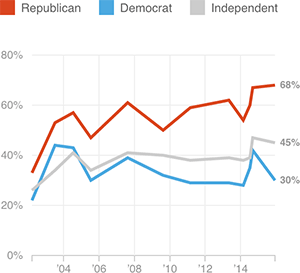

Widening Partisan Gap In Perceptions Of Islam And Violence
Share of poll respondents who agree with the statement: “The Islamic religion is more likely than [other religions] to encourage violence among its believers”
